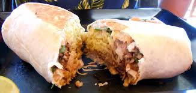

Alan M.F. Turing
Future Goals
This part is complicated. I'm currently dead, but if I was to return to life, I'd do at least these three things (in no particular order):
- I'd work with leading researchers to further my research on AI.
- I'd study the current state of encryption technology and develop enhanced security for all electronic communications.
- I'd love to try a burrito -- we didn't really have the best Mexican food in the UK in the 1940s and 50s.
